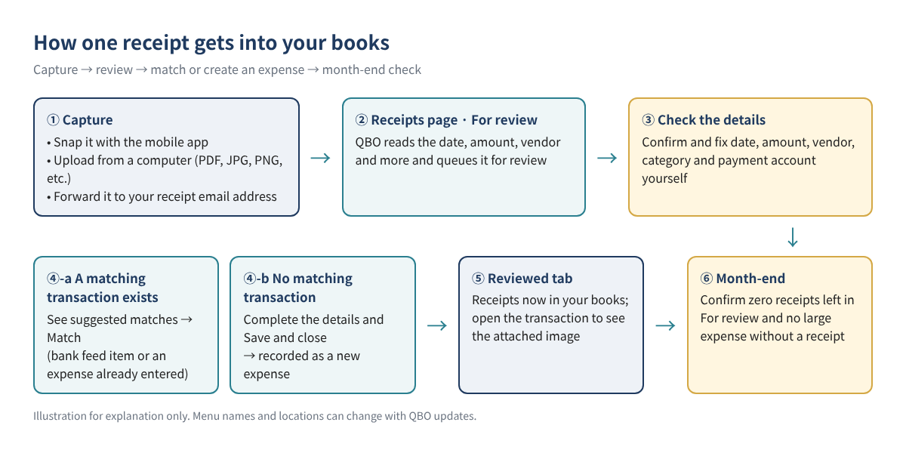
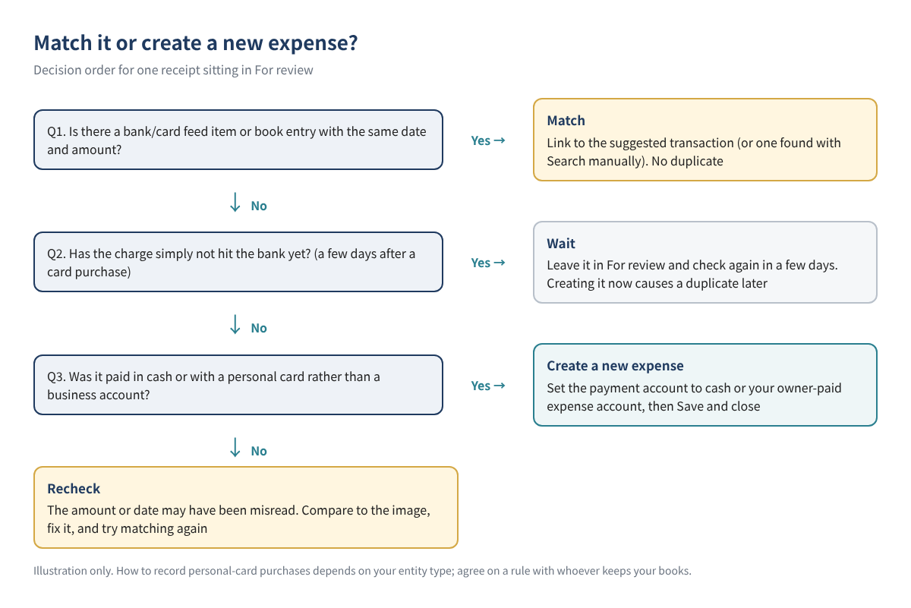
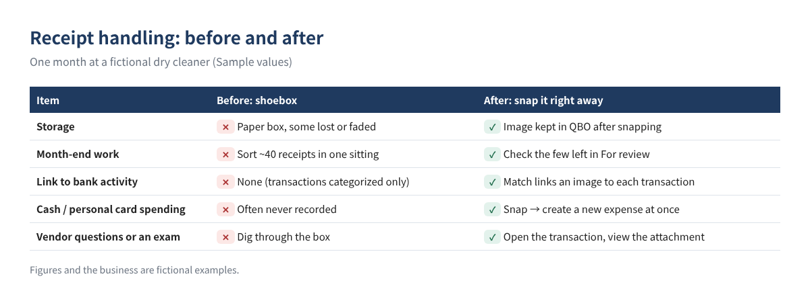
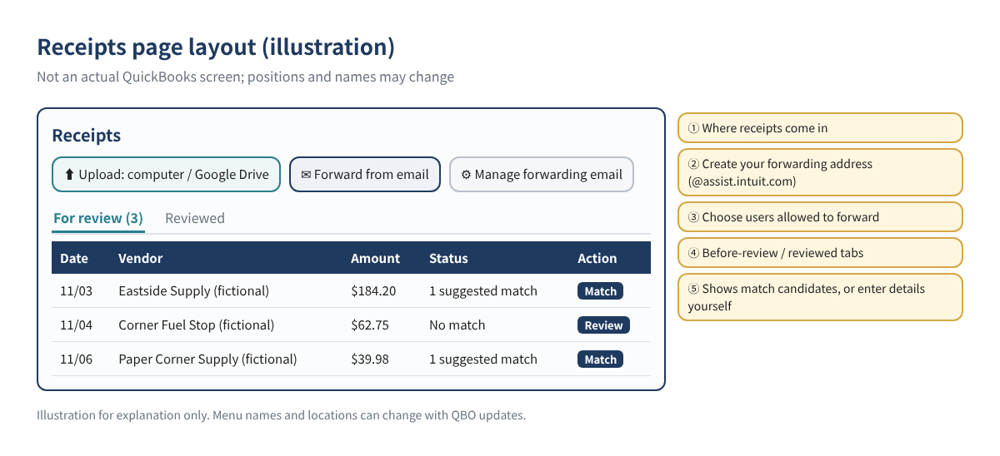

Still Keeping a Shoebox of Receipts? Snap, Upload and Match Receipts to Transactions in QuickBooks Online
Open the receipt box at month-end or year-end and you usually find faded thermal paper, card slips you can no longer tie to anything, and small cash receipts mixed together. Bank activity flows into QuickBooks Online (QBO) automatically, but the receipts that support those transactions often live somewhere else. When someone later asks what a $184 charge was for, you end up digging through the box again.
This guide walks through QBO's Receipts feature step by step: snapping receipts with your phone the moment you get them, uploading from a computer or by email, then either matching each receipt to a bank or card transaction already in QBO or recording it as a new expense. It also covers Attachments for transactions you have already entered, plus what the IRS says about electronic storage and how long to keep records. It expands on the receipt section of the series starter, QuickBooks Online Basics for Beginners, and pairs well with Bank Feeds: Match, Add and Rules.
Who this is for ☐ You collect receipts in a box or envelope and sort them all at once ☐ You categorize bank transactions but have never linked receipts to them ☐ Business costs paid in cash or on a personal card often go unrecorded ☐ Employees or managers hand you receipts in a pile ☐ You want to know whether you can throw the paper away
1. Why link a receipt to the transaction?
The IRS lists sales slips, paid bills, invoices, receipts, deposit slips and canceled checks as examples of supporting documents. For purchases and expenses, it says your documents should show the payee, amount, proof of payment, date incurred and a description of the item, and that you may need a combination of documents to cover all five. A bank statement shows who, when and how much, but rarely what you bought. Attaching the receipt image to the matching transaction puts all five elements on one screen.
| Element the IRS mentions | Where it usually comes from | Where you see it in QBO |
|---|---|---|
| Payee | Receipt or invoice, bank statement | Payee field on the transaction |
| Amount | Receipt, bank or card statement | Transaction amount |
| Proof of payment | Bank or card statement, canceled check | Bank feed transaction you matched |
| Date incurred | Receipt, statement | Transaction date |
| Description | Itemized receipt | Attached image, memo, category |
The IRS also notes that accounting software and other electronic systems must follow the same basic recordkeeping principles as paper books. Uploading an image is not the finish line; the record has to stay readable and findable. Section 8 returns to this.
2. Three ways to get receipts into QBO
Intuit's help says you can open the receipts page on the web at All apps → Accounting → Receipts. The left menu changes often, so if you cannot find it, type "Receipts" in the search bar. Whichever route you use, receipts land in the same review queue on that page.

| Method | How | Notes (per Intuit's help) |
|---|---|---|
| ① Mobile app | QBO app Menu (≡) → Receipt snap → take the photo → Use this photo → Done | Dark or blurry photos can take longer to read. You can rotate, crop or retake |
| ② Computer upload | On the Receipts page, Upload from computer or Upload from Google Drive | PDF, JPEG, JPG, GIF or PNG; one receipt per file. Newer iPhone/iPad photos (HEIC) may need converting |
| ③ Email forwarding | Email the image to your custom …@assist.intuit.com address | Attachments 46 KB to 20 MB. One receipt per image; several images per email is fine. Only permitted users can send |
Tip Intuit asks you to remove sensitive personal information, such as credit card numbers and government identifiers, before uploading. If a card slip shows the full number, cover it before you snap. Intuit's help also says this feature is limited on QuickBooks Online Free and Lite, so check what your current plan shows before relying on it.
3. Step by step: snap a receipt with your phone
The whole system depends on one habit: capture the receipt where you get it. Once it goes into a wallet it is easy to forget.
- Install the QuickBooks Online app (iOS or Android) and sign in with your own user login.
- Tap Menu (≡) and choose Receipt snap. The label may differ slightly by app version.
- Lay the receipt flat with all four corners visible. Good light helps the text recognition.
- Tap Use this photo, then Done when you have no more to capture.
- Check that it appears in the app's Receipts list (For Review). If not, pull down to refresh.
- Unfold long receipts into one shot and never put two receipts in one photo. Intuit recommends one receipt per image or file.
4. Step by step: set up email forwarding
Email forwarding works well for online-order receipts and for staff sending receipts from the road. Intuit lists an active subscription, Business view, and standard user permissions with at least Vendor access for anyone sending documents; its video says an admin sets this up.
- Go to All apps → Accounting → Receipts and select Forward from email.
- Enter a custom name; the address will end in @assist.intuit.com. Finish with Next → Looks good → Done.
- Open Manage forwarding email, turn on the toggle for each user who may send receipts, and select Close.
- Permitted users email receipt images to the address from the email they use to sign in to QBO. Intuit says each user can register only one email.
- After a few minutes, check the review queue. Intuit says QBO pulls the date, amount, vendor and last four digits of the card from the image.
Watch out Intuit notes that a Gmail address containing a "+" may not be registrable. If an employee sends from a personal address that is not their QBO login, the receipt may not arrive, so tell staff to use their QBO sign-in email. Employee expense claims (reimbursement requests) require QuickBooks Online Advanced, according to Intuit.
5. Review: match it or create a new expense?
An uploaded receipt is not in your books yet. You must open each one in the For review tab and process it; processed receipts move to Reviewed.
On the web
- On the Receipts page, open a receipt in For review.
- Compare the date, vendor and amount QBO read against the image. Automatic reading can be wrong.
- If QBO found existing matches, it shows how many. Select See suggested matches, pick the expense and select Match.
- If no match is suggested but you know the transaction exists, use Search manually.
- If there truly is no matching transaction, complete the payment account, category and memo, then Save and close to record a new expense.
In the mobile app
Per Intuit, the app shows a label under the amount when it finds matches; select the one to match. No label means no match was found, so swipe the receipt to create an expense. If details are missing, fill them in, tap Save receipt, then swipe to create the expense. If you processed one by mistake, swipe right on it in Reviewed to send it back to For Review.

The most common mistake is creating a new expense from a receipt paid with a business card. A few days later the same charge arrives in the card feed, someone adds it, and the cost is booked twice. For receipts paid from business accounts, wait for the feed item and match. Cash and personal-card purchases never come through a feed, so the receipt is the only record; create a new expense for those, and agree with whoever keeps your books on which payment account to use, since that depends on your entity type.
6. Attach files to transactions you already entered
You can also skip the Receipts page and attach a receipt or contract directly to a recorded transaction. Intuit's help says attachments work on bills, checks, expenses, invoices, sales receipts, credit memos, vendor credits and more, as well as on customer and vendor records, but not on list items such as accounts.
- On a transaction: open it, use the Attachments area to pick the file, then Save and close.
- On a vendor: open the vendor, go to the Vendor Details tab and select Attachments. Good for contracts that relate to the vendor rather than one transaction.
- Upload first: Settings ⚙ → Attachments, upload the file, then use the row menu to Create expense or Create invoice with the file already attached.
- Accepted formats: PDF, JPEG, PNG, DOC, XLSX, CSV, TIFF, GIF, XML. Avoid special characters in file names.
A name such as "2026-11-03_EastsideSupply_184-20.pdf" (date, vendor, amount) makes files easy to find in the Attachments list. Skip periods inside the name, commas and symbols like &.
7. Worked example: one week at a fictional dry cleaner
"Sunrise Cleaners" (fictional) uses a business debit card plus a little cash. The owner snaps every receipt on the spot and spends ten minutes each Friday clearing For review. Here are the five receipts from one week.
| Date | Receipt (fictional vendor) | Amount (Sample values) | Paid with | Same item in feed? | Action |
|---|---|---|---|---|---|
| 11/03 | Eastside Supply · detergent, hangers | $184.20 | Business card | Yes | Match → Supplies |
| 11/04 | Corner Fuel Stop · delivery van fuel | $62.75 | Business card | Not yet on Friday | Wait → match next Monday |
| 11/05 | Thread and buttons (local shop) | $18.40 | Cash | No (cash) | New expense, paid from Petty cash |
| 11/06 | Paper Corner Supply · receipt paper | $39.98 | Business card | Yes | Match → Office supplies |
| 11/07 | Steam iron parts | $96.50 | Owner's personal card | No (personal card) | New expense, owner-paid account per your rule |
| Total | 5 receipts | $401.83 | 3 matched · 2 new | 0 duplicates |
The fuel receipt is the one to watch. Had the owner created it as a new expense on Friday, then added Monday's card transaction, $62.75 would have been expensed twice. Waiting and matching attached the image to the card transaction and kept a single record. The cash and personal-card receipts will never appear in a feed, so they were recorded right away.


8. Can you toss the paper, and how long should you keep records?
IRS Publication 583 says all the requirements for paper books and records also apply to electronic storage systems. The system must index, store, preserve, retrieve and reproduce records in legible form, and provide a complete and accurate record the IRS can access. Paper originals may be destroyed once the system has been tested to show it reproduces them in line with IRS requirements and procedures are in place to keep it compliant; the publication points to Revenue Procedure 97-22 for details. A blurry or cropped photo may not meet that bar, so check image quality before discarding originals, and keep the paper too if you are unsure.
Retention follows the period of limitations for the return the record supports. Publication 583's table, summarized below, counts from the date you filed; a return filed early is treated as filed on the due date.
| Situation (Publication 583 summary) | Keep records for |
|---|---|
| You owe additional tax and none of the cases below apply | 3 years |
| You omitted income that is more than 25% of the gross income shown on the return | 6 years |
| You claim a loss from worthless securities or a bad debt deduction | 7 years |
| You file a claim for credit or refund after filing | Later of 3 years or 2 years after the tax was paid |
| You file a fraudulent return, or do not file | Not limited |
| Employment tax records | At least 4 years after the tax is due or paid, whichever is later |
| Property and equipment records | Until the limitations period ends for the year you dispose of the property in a taxable disposition |
The IRS also suggests checking whether insurers, creditors or other non-tax needs require keeping records longer. Rather than relying only on images inside QBO, consider exporting each year's attachments and key reports to separate storage at year-end.
9. Common mistakes
- Creating an expense before the card charge posts: adding the feed item later doubles the cost. Wait and match.
- Saving the scanned values unchecked: dates, decimal points and tips can be misread. Compare with the image first.
- Several receipts in one photo: they may be read as one, with amounts mixed. One receipt per file.
- Letting For review pile up: uploaded receipts are not in your books until reviewed. Clear the queue weekly.
- Full card numbers in the photo: cover sensitive data before you snap.
- No memo where the purpose is unclear: for meals, gifts and similar items, note who was there and the business purpose.
10. FAQ
Q1. I uploaded a receipt but see no match suggestions.
Either the transaction has not arrived in the bank or card feed yet, or QBO misread the date or amount. Fix the scanned values first, and if you know the transaction exists, use Search manually. For business-card purchases, wait a few days and check again.
Q2. Which amount should a restaurant receipt with a tip match?
The card charge normally includes the tip, so snap the signed slip showing the final total; it will match the feed amount. For deduction rules on meals, see Business Meals and Holiday Party Deductions (2026).
Q3. Can employees upload receipts?
Yes, if they are invited as QBO users with suitable permissions. For email forwarding, turn them on in Manage forwarding email and have them send from their QBO sign-in address. See Users, Permissions and Two-Step Verification for inviting users.
Q4. I matched the wrong transaction. Can I undo it?
Intuit says that in the app you can swipe right on a receipt in Reviewed to send it back to For Review. On the web, look for the undo option on the Reviewed tab of your current screen. If you saved a wrong amount or category, open the transaction and correct it.
Q5. Can I throw away paper receipts right after snapping them?
Publication 583 allows destroying originals when your electronic storage system has been tested to reproduce them properly and you maintain procedures to stay compliant. Check image quality first, especially for fast-fading thermal paper, and keep the originals for the retention period if you are not sure.
11. Self-check
- ☐ The QBO app is installed and I know where Receipt snap is
- ☐ My forwarding address (@assist.intuit.com) is set up and senders are permitted
- ☐ I cover card numbers and other sensitive data before snapping
- ☐ Every photo or file holds exactly one receipt
- ☐ Business-card receipts are matched after the feed item arrives
- ☐ Cash and personal-card receipts are recorded as new expenses using an agreed payment account
- ☐ For review is cleared to zero on a set day each week
- ☐ Attachments and reports are backed up at year-end and I know my retention periods
Related reading
- QuickBooks Online Basics for Beginners: 10 Things to Know
- QBO Bank Feeds: Match, Add and Rules
- Bills and Accounts Payable in QBO
- Users, Permissions and Two-Step Verification
- Find Duplicate Transactions and Reconciliation Differences
- Business Meals and Holiday Party Deductions (2026)
This article is general educational information, not tax, legal or financial advice. Consult a qualified professional about your situation. QuickBooks Online screens, menu names, plan features and prices change often, so check your current screens and official Intuit and IRS guidance before acting. All businesses, vendors and amounts in the examples are fictional.
QuickBooks is a registered trademark of Intuit Inc.; not affiliated with or endorsed by Intuit.